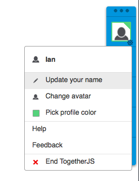
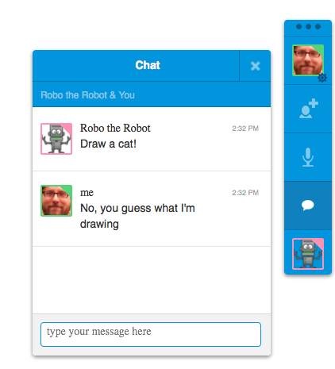

接著要大家解決《TogetherJS 介紹 (上)》所遇到的問題。還沒看過上篇的人先去複習一下吧！
添增 TogetherJS
TogetherJS 亦具備「交換中心 (Hub)」，可在作業期間處理所有人之間的訊息。此交換中心不會解讀這些訊息，而是來回傳遞所有人的訊息，甚至可交換不同頁面上的訊息。TogetherJS 亦可讓 App 傳送自訂訊息，例如：
TogetherJS.send({
type: "message-type",
...any other attributes you want to send...
})
1234
TogetherJS.send({ type: "message-type", ...any other attributes you want to send...})
可傳送訊息 (所有訊息均必備其 type) 並可監聽：
TogetherJS.hub.on("message-type", function (msg) {
if (! msg.sameUrl) {
// Usually you'll test for this to discard messages that came
// from a user at a different page
return;
}
});
1234567
TogetherJS.hub.on("message-type", function (msg) { if (! msg.sameUrl) { // Usually you'll test for this to discard messages that came // from a user at a different page return; }});
訊息的資料型態必須位於命名空間 (Namespace) 之內，如此 App 的訊息才不致於意外覆蓋 TogetherJS 的訊息。
為了同步所有人的繪圖作品，我們必須觀看所有描繪出來的線條，再將這些線條傳送給其他人：
function move(e) {
var mouse = {
x: e.pageX - this.offsetLeft,
y: e.pageY - this.offsetTop
};
draw(lastMouse, mouse);
if (TogetherJS.running) {
TogetherJS.send({type: "draw", start: lastMouse end: mouse});
}
lastMouse = mouse;
}
1234567891011
function move(e) { var mouse = { x: e.pageX - this.offsetLeft, y: e.pageY - this.offsetTop }; draw(lastMouse, mouse); if (TogetherJS.running) { TogetherJS.send({type: "draw", start: lastMouse end: mouse}); } lastMouse = mouse;}
傳送這些線條之前，先確認 TogetherJS 是否正實際運作 (TogetherJS.running)。而我們傳送的訊息應該具備完整資訊。
接著就監聽這些訊息：
TogetherJS.hub.on("draw", function (msg) {
if (! msg.sameUrl) {
return;
}
draw(msg.start, msg.end);
});
123456
TogetherJS.hub.on("draw", function (msg) { if (! msg.sameUrl) { return; } draw(msg.start, msg.end);});
由於 TogetherJS 只有在執行狀態才能呼叫 Listener，因此在註冊此 Listener 時，不需顧慮 TogetherJS 是否執行中。
這樣就能顯示大家的繪圖作品並共同合作了。不過目前還有個問題必須解決：如果在我開始畫圖之後，你才加入我的繪圖區，就會變成你只能看到我剛畫出來的線條，而看不到加入之前我已經畫過的線條。
要解決這個問題就必須監聽 togetherjs.hello 訊息。只要用戶端首次抵達新的頁面，就會送出此 togetherjs.hello 訊息。在我們看到該訊息之後，就接著將繪圖區的畫面傳送給其他人：
TogetherJS.hub.on("togetherjs.hello", function (msg) {
if (! msg.sameUrl) {
return;
}
var image = canvas.toDataURL("image/png");
TogetherJS.send({
type: "init",
image: image
});
});
12345678910
TogetherJS.hub.on("togetherjs.hello", function (msg) { if (! msg.sameUrl) { return; } var image = canvas.toDataURL("image/png"); TogetherJS.send({ type: "init", image: image });});
現在只要監聽此新的 init 訊息即可：
TogetherJS.hub.on("init", function (msg) {
if (! msg.sameUrl) {
return;
}
var image = new Image();
image.src = msg.image;
context.drawImage(image, 0, 0);
});
12345678
TogetherJS.hub.on("init", function (msg) { if (! msg.sameUrl) { return; } var image = new Image(); image.src = msg.image; context.drawImage(image, 0, 0);});
只要有 TogetherJS 的幾行程式碼，就能設計出即時繪畫的 App。我們還是必須自行撰寫其中某些程式碼，但 TogetherJS 可幫我們處理下列事情：
- 提供 URL 以利使用者開始工作階段並相互分享

- 建立 WebSocket 連線並連至我們的「交換中心伺服器」，以能在用戶端之間來回傳遞訊息
- 讓使用者設定自己的名稱與頭像，並能看到參與此工作階段的其他人

- 時時追蹤是誰在線上、是誰已離線、是誰閒置離開
- 同樣提供簡易又必備的功能，如打字交談

- TogetherJS 亦將處理工作階段的初始化與追蹤作業
此範例尚未達到的功能：
- 我們使用了固定尺寸的繪圖區，所以不需要考慮 2 個用戶端使用不同解析度的情況。一般情況下，TogetherJS 可處理不同的用戶端，且排版方式可適用不同的解析度，甚至可搭配適應性設計 (Responsive design)。要修正此問題的方法之一，就是使用固定的長寬比例，而所有繪圖定位均使用高度/寬度的百分比顯示方式。
- 現在的繪圖工具還不夠好玩！如果我正在畫 1 隻灰色兔子，你應該也要能畫 1 隻棕色獅子！繪圖的色彩功能尚待加強。
- 例如「清除繪圖區」的功能尚未同步。
- 我們並未儲存或載入任何現成圖片。一旦儲存並載入繪圖應用程式，你可能就必須深入思考所應該同步的功能。如果我完成了一幅圖畫、儲存完畢，再將圖畫轉入網站並加入你的工作階段，你的圖畫會不會覆蓋我的圖畫呢？若能將各幅圖畫置於專屬網址，就能清楚知道大家目前要一起編輯的圖畫。
想了解更多？
- 想進一步了解 TogetherJS 的架構嗎？可參閱技術簡介。
- 按下此說明網頁中的「Get Live Help」按鈕，即可和我們開始 TogetherJS 工作階段。
- 另可至 irc.mozilla.org，透過 #togetherjs 加入我們的 IRC。
- 歡迎使用 GitHub 上的程式碼。如果有任何問題或功能需求，均請踴躍回報，千萬別害羞。Mozilla 隨時留意多樣的回饋意見：任何想法、可能的使用情形 (或在這些使用情況下形成的挑戰)、說明頁面所無法回答的問題 (也代表說明文件未考量到的部份)，甚至告訴我們你想到深具潛力的協作 App。
- 加入我們的 Twitter：@togetherjs。
你想到任何適用 TogetherJS 的網站嗎？快提供意見給我們！
原文連結：https://hacks.mozilla.org/2013/10/introducing-togetherjs/